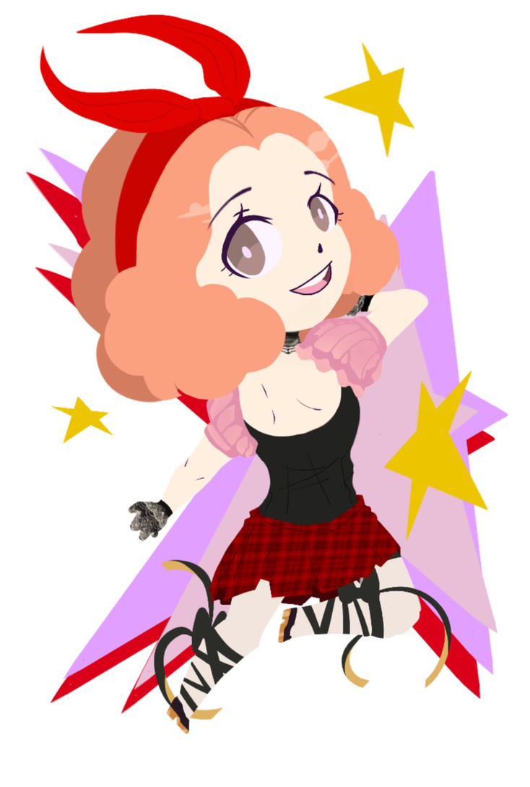
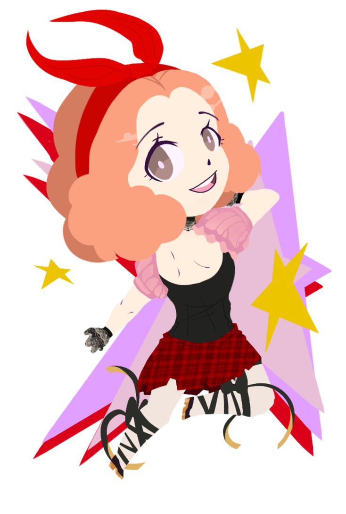

I'm a newcomer to the digital and interactive design world that has aspirations to make it as a technical artist for Ubisoft.
I've had experience in the digital field by designing signs and directory posters for Seminole State's digital meet,and i've sold prints at art sales before.
Attended Millennium middle school as a magnet and learned the arts further in classes at Seminole State.
I draw in my free time and I am currently exploring game development on my own time as well.
N/A
 
